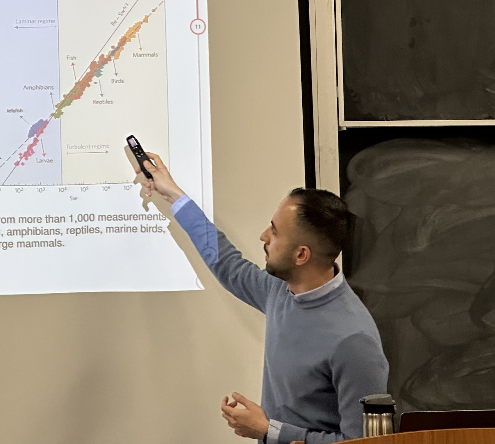

About me
I am currently a Ph.D. student in the Deparment of Mathematics at Simon Fraser University, working my supervisors Dr. John Stockie and Dr. Ailene MacPherson. I defended my MSc in Applied Mathematics in the Department of Mathematics at the Simon Fraser University, BC, Canada 2022. And completed my BSc in Computer Science in the Department of Mathematics and Computer Science Faculty at the AmirKabir University of Technology (Tehran Polyhechnic), Tehran, Iran in 2019.

Picture of MS.c. defence session on December, 2022.
Short CV
Education
- Master of Science in Applied Mathematics, Simon Fraser University, Canada.
- Bachelor of Science in Computer Science, AmirKabir University of Technology, Iran.
Research
- MS.c. thesis "Computational Study of 2D jellyfish with the Immersed Boundary Method"
- BS.c. project "Cardinality Optimization"
Teaching
- Teaching assistant for mathematics of sports (MATH 303), SFU, Fall 2022
- Teaching assistant for numerical analysis (MACM 316), SFU, Fall 2021
- Teaching assistant for applied calculus, SFU, 2021-2022
Honors
- Awarded certificate with distinction in recognition of the mathematical sophistication, originality, and significance of the thesis and defence presented on December, 2022
- Awarded GPS graduate fellowship by Simon Fraser University on Fall 2021.
- Ranked among the top 5 percent of all Iranian student in the "National Universities Enterence Exam" in Mathematics and Physics branch, 2014.
- Ranked among the top 5 percent of all Iranian student in the "National Universities Enterence Exam" in Foreign Languages branch, 2014.
Research
The majority of the problems I study are motivated by biological applications of mathematics, and the classifications can be used to broadly cluster my projects:
- 1. Computational fluid dynamics: Analyzing fluid-structure interactions by using the immersed boundary method to model the interaction of an elastic deformable interface or structure with an incompressible fluid flow. I was motivated by diverse applications from biology such as swimming marine organisms, like jellyfish.
- 2. Epidemiology: Analytical and numerical modelling and evaluation of infectious disease outbreaks to determine the seriousness of various parameters to control the outbreak.
- 3. Evolution: Examining issues raised in the subject of evolution, such as local adaptation.
Contact
mahdi_salehzadeh[at]sfu[dot]ca
BLU 9402 (Blusson Hall)
Department of Mathematics, Simon Fraser University,
8888 University Drive, Burnaby, BC V5A 1S6, Canada